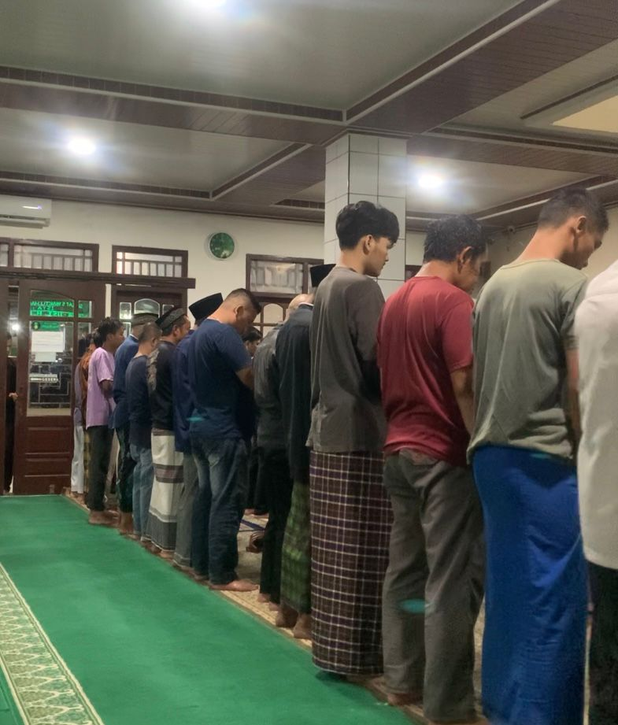

Kegiatan ibadah: Sholat berjamaah dan Membaca Al-Qur'an sebagai wujud
nyata Amor Deus.
Refleksi Pengamalan Nilai Trilogi Nusa Putra dalam Kehidupan Sehari-hari

Halo! Perkenalkan, saya Muhammad Naufal Ayasy, mahasiswa Program Studi Teknik Informatika di Universitas Nusa Putra. Pada artikel ini, saya ingin berbagi pengalaman nyata dalam mengamalkan salah satu nilai utama dari Trilogi Nusa Putra, yaitu Amor Deus, yang berarti kecintaan kepada Tuhan.
Universitas Nusa Putra memiliki landasan nilai yang disebut Trilogi Nusa Putra, terdiri dari tiga pilar utama: Amor Deus (cinta kepada Tuhan), Amor Parentium (cinta kepada orang tua), dan Amor Concervis (cinta kepada sesama). Ketiga nilai ini bukan sekadar semboyan, melainkan panduan hidup yang diharapkan tercermin dalam perilaku sehari-hari seluruh sivitas akademika Nusa Putra.
Amor Deus sendiri berasal dari bahasa Latin yang berarti "Cinta kepada Tuhan." Nilai ini menjadi fondasi pertama dan utama dalam Trilogi Nusa Putra karena keyakinan bahwa segala ilmu pengetahuan, aktivitas akademik, dan kehidupan sosial harus berpijak pada kesadaran akan kehadiran dan kasih sayang Tuhan Yang Maha Esa.
Bagi saya sebagai mahasiswa Muslim, Amor Deus berarti menjalankan kewajiban ibadah dengan penuh kesadaran dan keikhlasan, bukan karena paksaan semata, melainkan karena benar-benar merasakan kecintaan dan rasa syukur kepada Allah SWT atas segala nikmat yang telah diberikan, termasuk kesempatan untuk menuntut ilmu di Universitas Nusa Putra.
Sebagai bentuk pengamalan nyata nilai Amor Deus, saya secara konsisten menjalankan dua kegiatan ibadah utama dalam kehidupan sehari-hari selama menjalani perkuliahan. Dua kegiatan ini menjadi pilar saya sebagai mahasiswa Teknik Informatika di Universitas Nusa Putra.
Dari kedua kegiatan ini, yang paling berkesan bagi saya adalah sholat berjamaah. Ketika saya melangkah ke masjid bersama teman-teman satu kos dan satu kampus, ada perasaan ketenangan dan kebersamaan. Dalam satu shaf sholat berjamaah, tidak ada perbedaan antara mahasiswa semester satu hingga semester delapan, antara yang kaya dan yang miskin. Semua sejajar di hadapan Allah.
Sementara itu, membaca Al-Qur'an sehabis sholat memberikan saya ketenangan yang berbeda. Melafalkan ayat-ayat suci sebelum membuka laptop dan memulai kuliah memberi semacam "boost" yang membuat pikiran lebih jernih dan fokus sepanjang hari.
Mengamalkan Amor Deus dalam kehidupan mahasiswa tidaklah selalu mudah. Jadwal kuliah yang padat, tugas yang menumpuk, dan tekanan deadline seringkali menjadi "alasan" untuk melewatkan sholat atau menunda membaca Al-Qur'an. Namun justru di sinilah nilai Amor Deus diuji.
Saya ingat di satu momen menjelang ujian akhir semester, saya begitu stres hingga hampir melewatkan sholat Ashar karena sibuk mengerjakan tugas coding. Tapi kemudian saya berhenti, mengambil wudhu, dan sholat. Anehnya, setelah sholat, pikiran saya terasa jauh lebih jernih. Solusi dari bug yang sudah saya kejar berjam-jam tiba-tiba muncul begitu saja. Pengalaman ini mengajarkan saya bahwa mendekatkan diri kepada Tuhan bukan menghambat produktivitas, justru sebaliknya.
Inilah yang saya pahami dari Amor Deus: bukan sekadar ritual keagamaan, melainkan sebuah hubungan hidup antara manusia dan Penciptanya yang memberikan kekuatan, ketenangan, dan arah dalam setiap aspek kehidupan, termasuk dalam studi Teknik Informatika yang saya jalani.
Trilogi Nusa Putra, khususnya nilai Amor Deus, bukan hanya slogan indah yang terpampang di dinding kampus. Ia adalah kompas kehidupan yang mengingatkan saya dan semua mahasiswa Universitas Nusa Putra bahwa di balik setiap ilmu yang kita pelajari, ada Tuhan yang Maha Mengetahui. Di balik setiap keberhasilan yang kita raih, ada rahmat yang patut disyukuri.
Dengan mengamalkan Amor Deus secara konsisten melalui sholat dan membaca Al-Qur'an, saya berharap dapat menjadi mahasiswa yang tidak hanya cerdas secara intelektual dan teknologi, tetapi juga kuat secara spiritual dan berakhlak mulia. Karena pada akhirnya, teknologi yang dibangun tanpa pondasi nilai ketuhanan bisa menjadi alat yang berbahaya, namun teknologi yang lahir dari tangan-tangan yang bertakwa akan menjadi rahmatan lil alamin, berkah bagi seluruh alam.
Semoga pengalaman ini bermanfaat dan menginspirasi teman-teman mahasiswa lainnya untuk juga semakin menghayati dan mengamalkan Trilogi Nusa Putra dalam kehidupan sehari-hari. Salam dari saya, Muhammad Naufal Ayasy, Teknik Informatika, Universitas Nusa Putra.